The computers at Digipen already have WSL and Ubuntu installed so you can just jump down to Setting Up WSL. If you want to set it up on your own computers, you have to start from the top of this page.
Topics:Downloading and Installing WSL and Ubuntu
After running the command, reboot the computer. It will install more things during the shutdown and restart phase.Enable-WindowsOptionalFeature -Online -FeatureName Microsoft-Windows-Subsystem-Linux
This will download the distribution. The file is called Ubuntu.appx and is about 225 MBs. It may take a few minutes to download depending on the network speed.Invoke-WebRequest -Uri https://aka.ms/wsl-ubuntu-1804 -OutFile Ubuntu.appx -UseBasicParsing
And that's it! Ubuntu 18.04 LTS has been installed and is ready to be enabled and setup. That's the topic of the next section.Add-AppxPackage .\Ubuntu.appx
More details:
Setting Up WSL
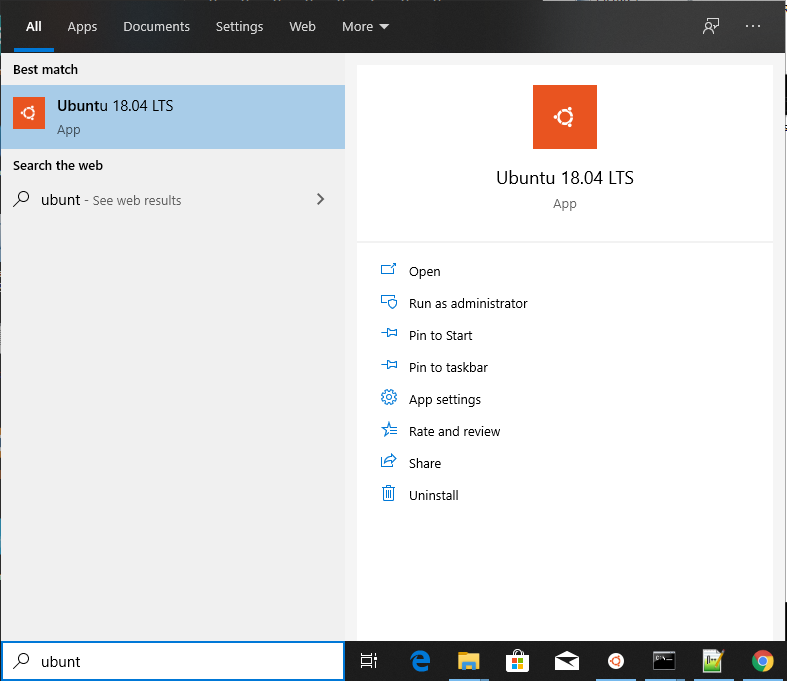
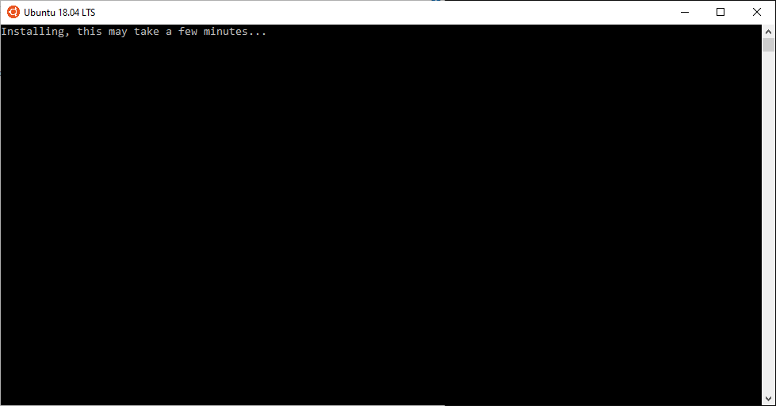
Congratulations! You are now running Linux (inside of Windows)! You can tell because the command prompt has changed:
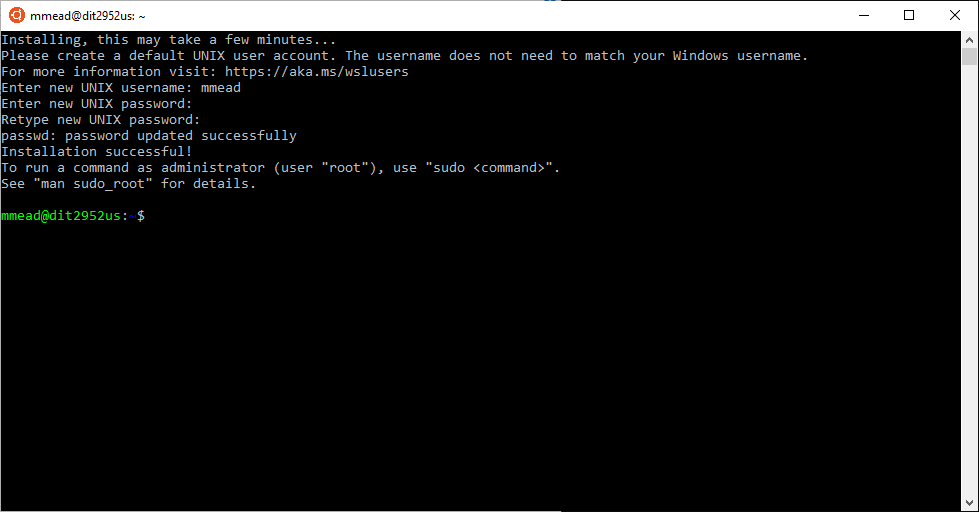
If you are familiar with Linux you can skip the rest of this brief tutorial and just start having fun with it! However, if you are new to Linux, you can continue on and see how to get a build environment and memory debugger setup.
Installing Software in Linux
It will prompt you for your password (the one the just created, which is the same as your Digipen Windows password, right?) It will run for a minute or so and then tell you it's done:sudo apt-get update
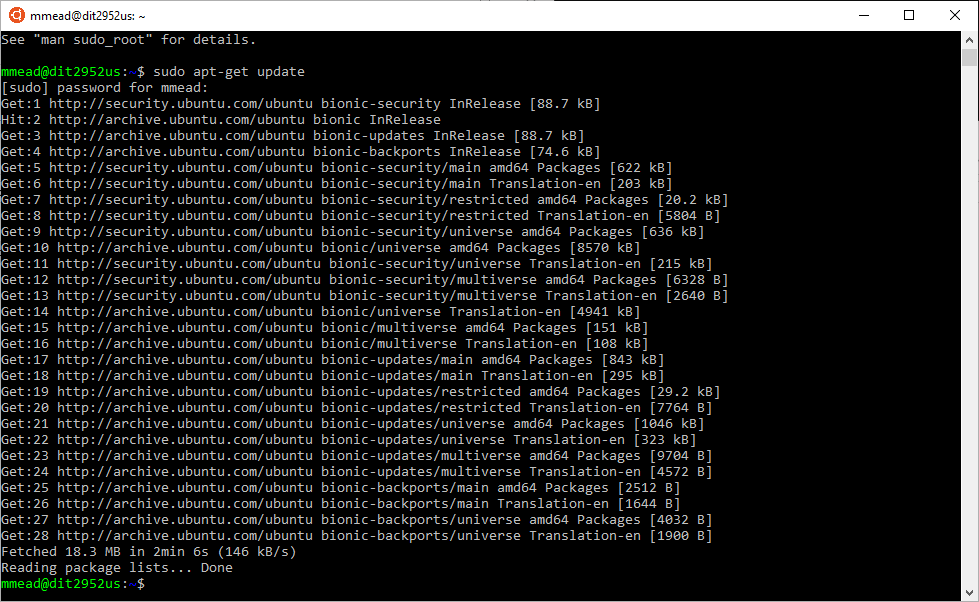
This will install the GCC C compiler, C++ compiler, Valgrind (the memory debugger) and some other dev tools (make, etc.). It will take a few minutes.sudo apt-get install build-essential gcc g++ valgrind
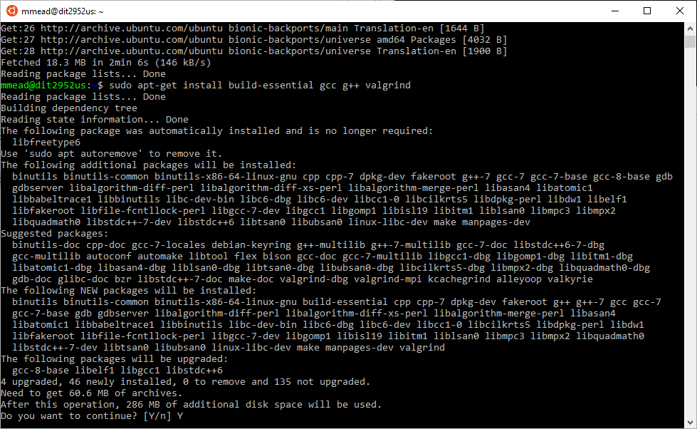
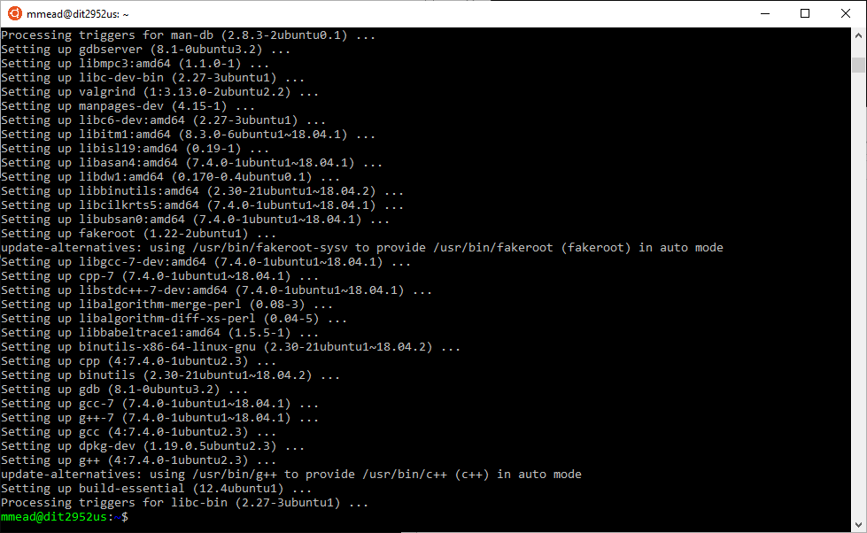Congratulations! You've just setup a development environment, installed a C and C++ compiler, and installed a memory debugger! (Try doing that easily in Windows!)
#include <stdlib.h>
int main(void)
{
malloc(123); /* Leaks 123 bytes of memory */
return 0;
}
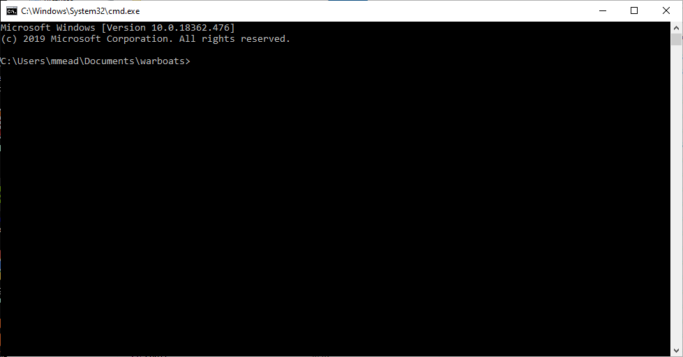
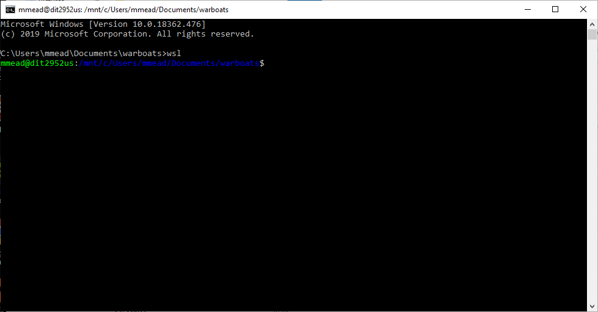
Remember the command wsl as it is the command you use to switch into Linux. You
will still be in the same directory as you were in Windows (which is very convenient).
To get out of Linux and return back to Windows, simply type exit while you're
in Linux. If you happen to type exit while you're in Windows, it will close
the command prompt and you'll have to reopen it.
Notice the directory you're in. My example shows: /mnt/c/Users/mmead/Documents/warboats
When you're in Linux, the entire C drive for Windows is located in /mnt/c.
Also notice that directories are separated by a forward slash / in Linux.
Windows uses a backslash \.
Once you've built the project, execute it to make sure it actually works. Remember, in Linux and Mac, you run the program like this with a leading dot and forward slash:
./warboats 1
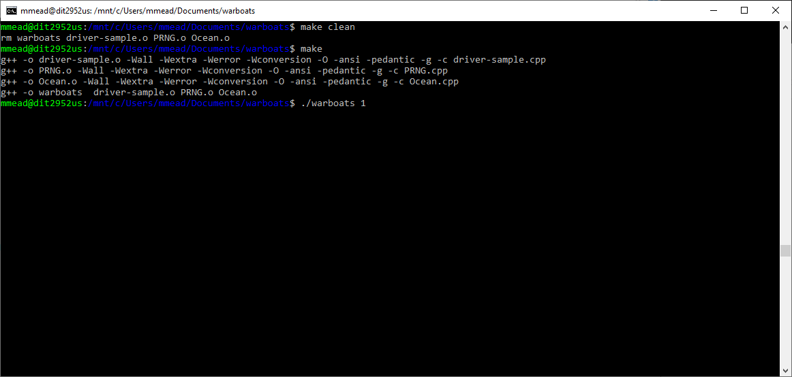The next screenshot shows you what happens after running the program.
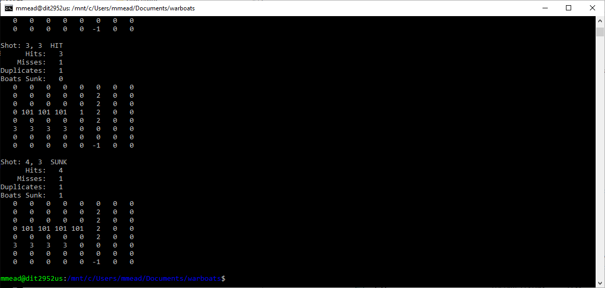
Ok, it looks like things are working. Now, let's add a memory leak!
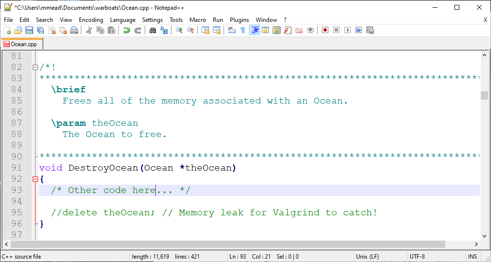
This will cause Valgrind to run WarBoats (the first test only) and to look for memory problems. The end of the command:valgrind -q --leak-check=full --show-reachable=yes ./warboats 1 > /dev/null
suppresses the output from WarBoats (redirects it to nowhere). At this point, we don't care what the output is because we just want to see Valgrind's output. We can see that Valgrind found the memory leak:> /dev/null
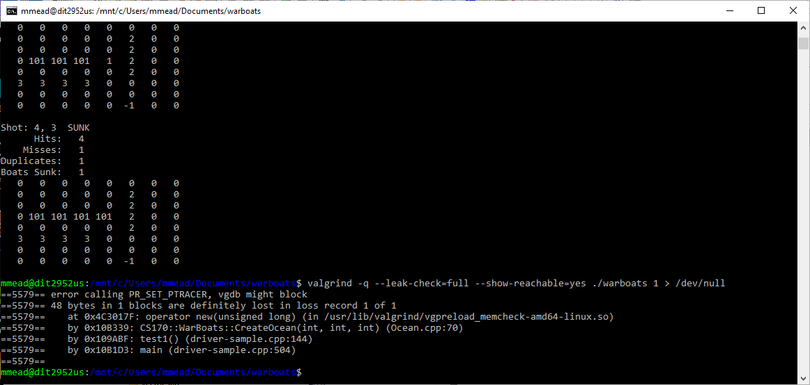
It says that 48 bytes were leaked. This is simple because that's the sizeof(Ocean). Here are the relevant structures to see for yourself. (There are 4 bytes of padding for alignment in the Ocean struct)
//! Statistics of the "game"
struct ShotStats
{
int hits; //!< The number of boat hits
int misses; //!< The number of boat misses
int duplicates; //!< The number of duplicate (misses/hits)
int sunk; //!< The number of boats sunk
};
//! The attributes of the ocean
struct Ocean
{
int *grid; //!< The 2D ocean
Boat *boats; //!< The dynamic array of boats
int num_boats; //!< Number of boats in the ocean
int x_quadrants; //!< Ocean size along x-axis
int y_quadrants; //!< Ocean size along y-axis
ShotStats stats; //!< Status of the attack
};
as it probably won't affect any of you. If you're interested, you can find some information on that error here or Google for more.error calling PR_SET_PTRACER, vgdb might block
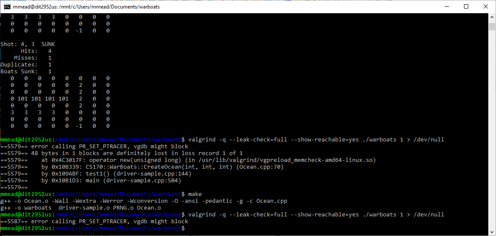
Running GUI Applications in WSL
In order to run GUI applications you will need to install an XServer. There are various XServers available for Windows and I'm not going to tell you which is the best. (I really don't know as I don't use Windows). However, here is one suggestion:VcXsrv - An X Server for Windows
It is a free and open source native X server for Windows.
Select Multiple windows:
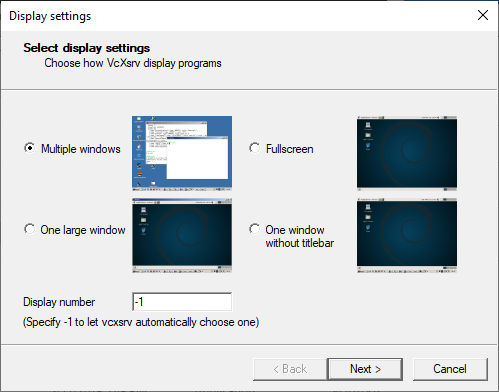
Start no client:
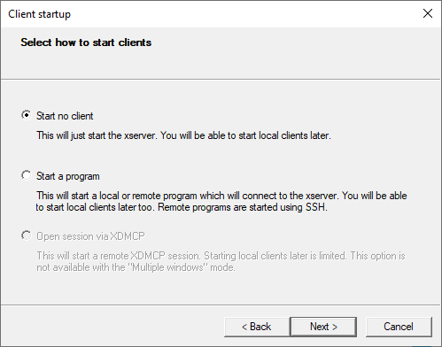
Choose the Clipboard and Native opengl. I'm not really sure how the Native opengl
works because I didn't see any difference with or without that when running an
OpenGL app. (But, I was running WSL inside a Windows VM inside of Linux!)
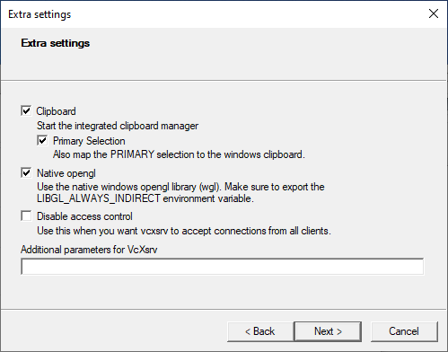
You can save the configuration, if you want, and then click Finish.
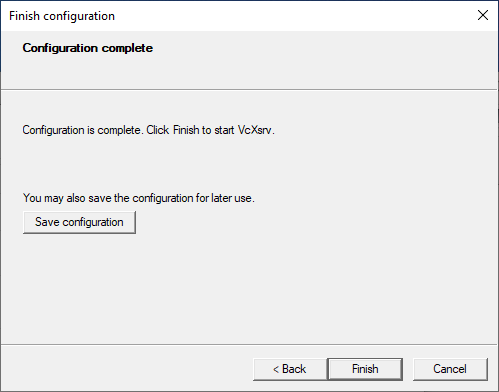
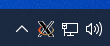
Now graphical applications will know how to connect to the XServer.export DISPLAY=localhost:0.0
Tip: If you want the console to be able to display GUI applications automatically (without having to type the export command everytime), add the export command to the bottom of your .bashrc file. (It's in /home/USER/.bashrc, where USER is your username.) Now, everytime the console is opened, it is able to support GUI apps.
With that out of the way, let's test it with glxgears. First install it:
Then run the command:sudo apt install mesa-utils
In the upper left corner of the screen you should see a small window that looks like this:glgears
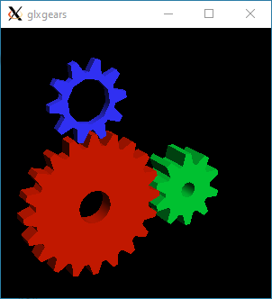
Let the gears spin for about 20 seconds or so and then close the window.
This is the output you'll see (or similar) in the console window where you ran it from:
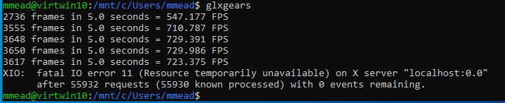
You can ignore the error, as that is the message you get when you stop the program. It's telling you that you are getting a little over 700 frames per seconds (FPS), which means that the XServer is working.
Now if you try to run glxgears again, you'll get the message:
Error: couldn't open display localhost:0.0
Links